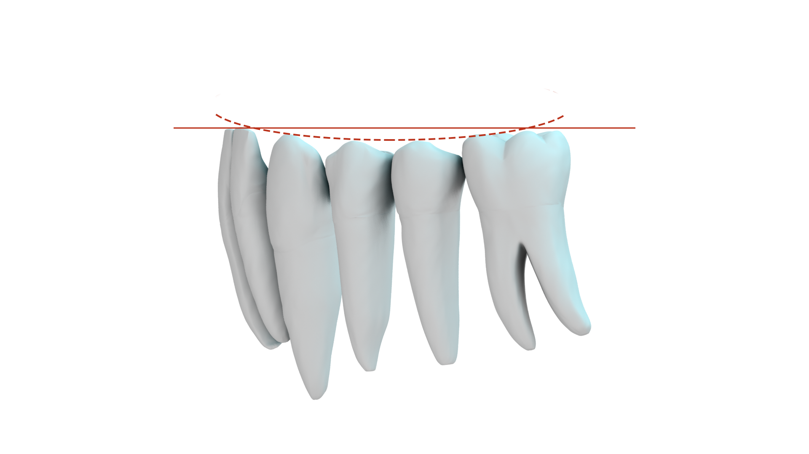
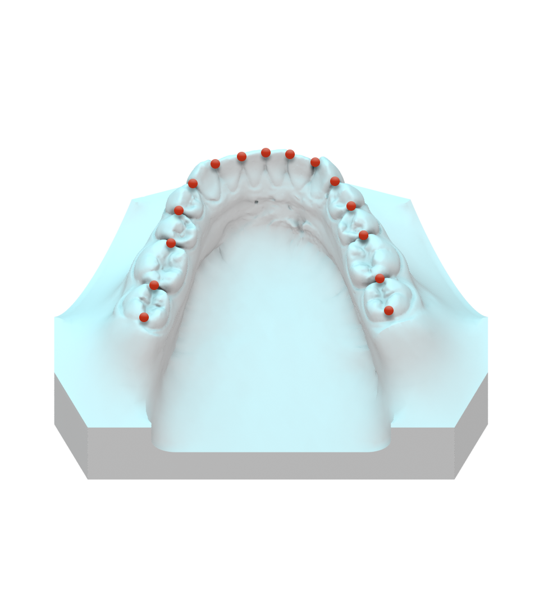
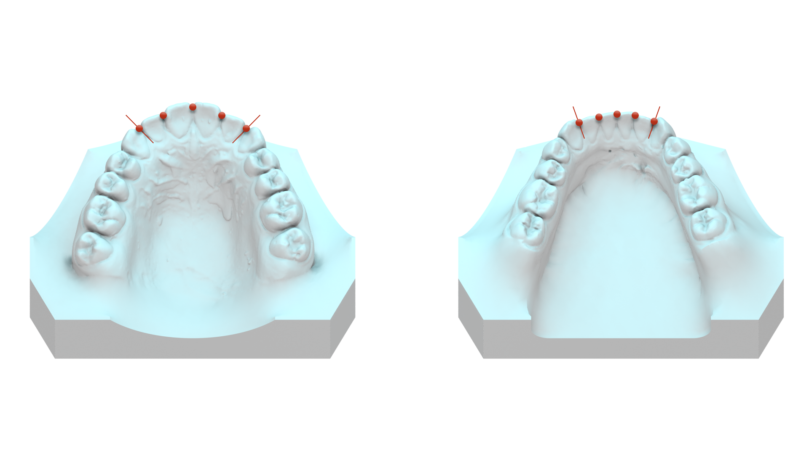

Der Zahnbogen kann in seiner Grundform elliptisch, parabelförmig oder lyraförmig ausgebildet sein. Weiterhin können ein Schmalkiefer evtl. mit Spitzfront oder eine Flachfront imponieren. Zuletzt sollen auffällige Asymmetrien der Kieferform erfasst werden. Hierzu wird im Oberkiefer mit Hilfe der Schmutd-Messplatte der senkrechte Abstand der medianen Raphe zum palatinalen Zahnfleischsaum im Bereich der ersten Molaren re. und li. getrennt gemessen. Im Unterkiefer ist nur eine beschrei-bende Beurteilung möglich.
Neben auffällig großen oder breiten Zähne sind an dieser Stelle Zapfenzähne, nicht getrennte Doppelanlagen, Hypoplasien oder Hyperplasien zu erwähnen.
Mögliche Befunde sind hier Eng- oder Lückenstände sowie Dreh-, Kipp-, Falschstän-de einzelner Zähne oder von Zahngruppen (z.B. Steilstand im Bereich der Frontzähne). Auffällige Wanderungen von Zähnen oder von Zahngruppen sollen erkannt wer-den.
Einzelne Zähne oder Zahngruppen können sich in Supra- oder Infraposition zur Okklusionsebene befinden.
Für die Messung der anterioren und posterioren Zahnbogenbreite benötigt man korrespondierende Messpunkte im Ober- und Unterkiefer.
| anteriore Zahnbogenbreite: | Mitte der Fissuren P1 oder IV |
| posteriore Zahnbogenbreite: | zentrale Gruben M1 |
| anteriore Zahnbogenbreite: | Kontaktpunkte P1-P2 oder IV-V |
| posteriore Zahnbogenbreite: | distobukkale Höcker M1 |
Es ist weniger wichtig, scheinbare Abweichungen in den Einzelkiefern zu ermitteln als Diskrepanzen zwischen der Kieferbreite des Ober- und des Unterkiefers festzustellen.
Verschiedene Autoren haben in der Vergangenheit über eine Korrelation zwischen der Breite der oberen Incisivi (SIOK) und der vorderen und hinteren Zahnbogenbreite (P-P, M-M) eine „Sollgröße“ für die transversale Dimension der Zahnbögen gesucht. In der Literatur findet man diesbezüglich verschiedene Angaben, wie z.B. den Pont´schen Index, der später u.a. von Linder und Hartd modifiziert wurde oder eine vereinfachte Formel nach Schmutd. Es muss jedoch festgestellt werden, dass die verschiedenen angegebenen “Normwerte" in neueren Studien an eugnatden Gebissen nicht verifiziert werden konnten.
Die Spee-Kurve sollte an der tiefsten Stelle nicht tiefer als 1,5 mm sein.
Davon abweichend spricht man von einer fla-chen oder übermäßig ausgeprägten Spee-Kurve.

Als Grundlage für die Platzanalyse erfolgt die Vermessung aller durchgebrochen bleibenden Zähne im Wechselgebiss oder im permanenten Gebiss. Für jeden Zahn wird die maximale Breite von mesial nach distal gemessen.

Ausgehend von den Zahnbreiten werden folgende Werte in das unten aufgeführte Schema eingetragen und für die Analyse der Platzverhältnisse verwendet.
| Ist-Wert | Soll-Wert | Differenz | |
| Platz in der Front | |||
| Linke Stützzone | |||
| Rechte Stützzone | |||
| Gesamtbilanz |
| Ist-Wert | Soll-Wert | Differenz | |
| Platz in der Front | |||
| Linke Stützzone | |||
| Rechte Stützzone | |||
| Gesamtbilanz |
Zuerst wird die Summe der Schneidezahnbreiten im Oberkiefer (SIOK) und im Unter-kiefer (SIUK) ermittelt.

Kann eine der beiden Summen nicht gemessen werden, z. B. weil einzelne Schnei-dezähne noch nicht durchgebrochen sind oder fehlen, so misst man die entspre-chende Summe im jeweils anderen Kiefer und berechnet die fehlende Summe nach der TONN´schen Formel.
Imageplaceholder
Dabei wird davon ausgegangen, dass im eugnatden Gebiss ein festes Verhältnis zwischen der SIOK und SIUK besteht.
Fehlt hingegen nur Zahn (oder ist einer hypoplastisch), wird die Breite des Zahnes der Gegenseite für die Berechnung verwendet
Das vorhandene Platzangebot im Bereich der Front im Oberkiefer wird ermittelt, indem man mit dem Zirkel die Strecke von distal der 2er bis zum Kontaktpunkt 11/21 bzw. zur Mitte eines etwaigen Diastema mediale abgreift und ausmisst. Bei einem fehlenden 2er kann man stattdessen bis mesial des 3ers messen. Die erhaltenen Werte werden addiert und ergeben das Platzangebot in der Front. Der dazugehörige Soll-Wert entspricht der SIOK. Im Unterkiefer erfolgt ein analoges Vorgehen.
Die kieferortdopädische Stützzone rechts und links ist jeweils definiert als der Bereich vom distalen Kontaktpunkt des seitlichen Schneidezahns bis zum mesialen Kontakt-punkt des ersten Molaren. Der Durchschnittswert liegt im Oberkiefer bei ungefähr 23 mm und im Unterkiefer ungefähr bei 21 mm.
Die Stützzonen des Milchgebisses sind im Unterkiefer durchschnittlich 2,5 mm und im Oberkiefer ca. 1,5 mm größer als im bleibenden Gebiss. Dieser Überschuss wird auch als „Leeway-Space“ bezeichnet. Ein Einbruch der Stützzonen, etwa durch vorzeitigen Milchzahnverlust oder eine Approximalkaries, führt fast immer zu einem sekundären Platzmangel.
Die Stützzonen werden für jeden Quadranten ausgemessen und als „Ist-Wert“ in das Schema eingetragen. Den dazugehörigen „Soll-Wert“ kann man bei noch nicht abgeschlossenem Zahnwechsel der Tabelle von Moyers entnehmen. Man sucht dazu die SIUK auf, liest anschließend die jeweiligen Stützzonenwerte für den Oberkie-fer und Unterkiefer getrennt ab und trägt sie ebenfalls in das Schema ein. Die Diffe-renz gibt Auskunft darüber, ob ein Platzmangel (negative Differenz) oder ein Platz-überschuss (positive Differenz) vorliegt.
| Summe der Inzisivi im UK | Summe 3, 4, 5 im OK | Summe 3, 4, 5 im UK |
|---|---|---|
| 19,5 | 20,6 | 20,1 |
| 20,0 | 20,9 | 20,4 |
| 20,5 | 21,2 | 20,7 |
| 21,0 | 21,3 | 21,0 |
| 21,5 | 21,8 | 21,3 |
| 22,0 | 22,0 | 21,6 |
| 22,5 | 22,3 | 21,6 |
| 23,0 | 22,6 | 22,2 |
| 23,5 | 22,9 | 22,5 |
| 24,0 | 23,1 | 22,8 |
| 24,5 | 23,4 | 23,1 |
| 25,0 | 23,7 | 23,4 |
| 25,5 | 24,0 | 23,7 |
| 26,0 | 24,2 | 24,0 |
| 26,5 | 24,5 | 24,3 |
| 27,0 | 24,8 | 24,6 |
| 27,5 | 25,0 | 24,8 |
| 28,0 | 25,3 | 25,1 |
| 28,5 | 25,3 | 25,4 |
| 29,0 | 25,9 | 25,7 |
Im Rahmen der Gesamtbilanz werden die Platzverhältnisse im Bereich der Front und im Bereich der Seitenzähne zusammengefasst, und es errechnet sich gegebenen-falls insgesamt ein Überschuss oder ein Mangel an Platz.